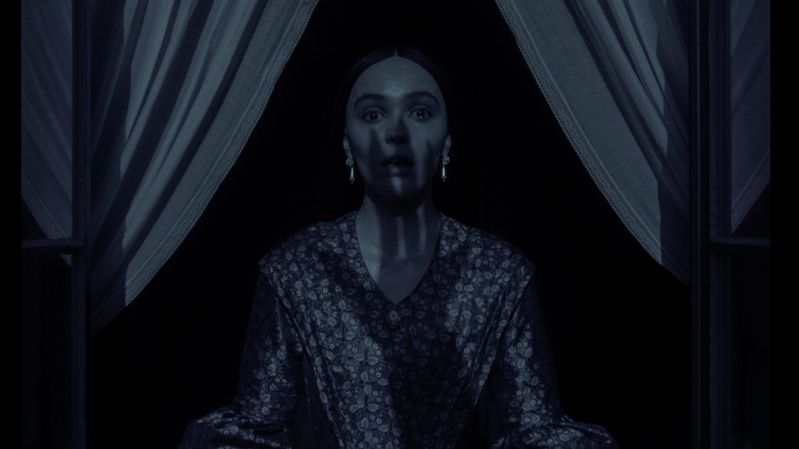
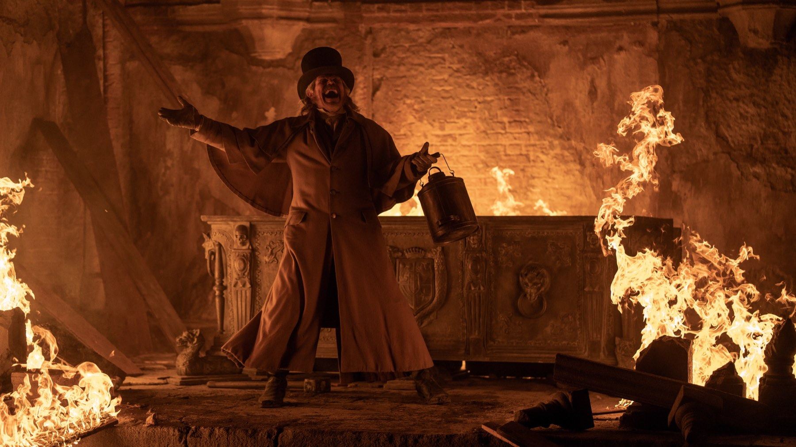

Nosferatu
Robert Eggers rifà il vampiro di Murnau con una messa in scena gotica di rara bellezza: Lily-Rose Depp è il cuore del film, il mostro un po' meno, e la seconda metà perde mordente
Rifare Nosferatu è un azzardo: si prende un classico del 1922 che tutti conoscono per le ombre e per il volto scavato di Max Schreck, e si prova a farlo tornare a fare paura. Robert Eggers, dopo The Witch, The Lighthouse e The Northman, ci ha provato a modo suo: senza fretta e con una cura maniacale per i dettagli. Il film è nelle sale italiane dal 1° gennaio 2025. Il risultato è bellissimo da guardare e meno terrificante di quanto speravamo.
Di cosa parla Nosferatu?
La storia segue la linea di quella che conosciamo, senza stravolgimenti. Thomas Hutter, un giovane agente immobiliare interpretato da Nicholas Hoult, viene mandato in Transilvania a concludere un affare con il misterioso conte Orlok. A casa lascia la moglie Ellen, Lily-Rose Depp, che da tempo è tormentata da visioni e da un legame inspiegabile con qualcosa di antico e affamato. Quando l'ombra del conte arriva in città, per Ellen la posta in gioco non è più solo la salute.
Nel cast ci sono anche Aaron Taylor-Johnson ed Emma Corrin, una coppia di amici dei coniugi Hutter, e Willem Dafoe nel ruolo di uno studioso di occulto, il professor Albin Eberhart von Franz. Eggers firma da solo la sceneggiatura.
Come è girato: il gotico secondo Eggers
È la parte in cui il film non sbaglia quasi nulla. La fotografia di Jarin Blaschke, girata in pellicola 35mm e con colori molto spenti, trasforma ogni inquadratura in un quadro: stanze in penombra, candele, nebbia, corridoi dove l'oscurità sembra avere una profondità sua. Il richiamo all'espressionismo tedesco è evidente e mai di maniera, e la recensione dell'Irish Times lo riconosce volentieri, parlando di quadri che inquietano davvero.
Il lavoro sulla messa in scena è altrettanto impressionante. Le riprese si sono svolte tra il 20 febbraio e il 19 maggio 2023, tra gli studi Barrandov di Praga, castelli cechi e il castello di Corvin, in Romania; scenografie di Craig Lathrop e costumi di Linda Muir danno al film una concretezza che i set digitali raramente raggiungono. Anche Cineblog, che lo definisce un horror di gran pregio, sottolinea il lavoro sulle immagini, con scene girate di giorno e trasformate in notte in postproduzione.
Lily-Rose Depp e Bill Skarsgård: chi regge il film?
Il film lo porta sulle spalle Lily-Rose Depp. Il suo è un lavoro fisico, nervoso, spesso scomodo da guardare: Ellen è posseduta, spaventata e al tempo stesso attratta, e l'attrice tiene tutto insieme senza mai strafare. Per gran parte della critica è la ragione principale per vederlo, anche tra chi trova il film, nel suo insieme, meno convincente.
Più divisivo il mostro. Eggers ha raccontato a Everyeye di aver voluto il vampiro più disgustoso mai visto, tornato alle radici folkloristiche dei non morti, e di aver voluto i baffi perché in Transilvania non se ne potevano evitare: "Non potevamo non mettere i baffi". La scelta è coerente con il progetto, ma ha spiazzato chi aspettava la silhouette calva di Schreck. Anche l'Irish Times lamenta che questo Orlok faccia meno paura del suo antenato; noi aggiungiamo che il personaggio funziona meglio quando lo si sente che quando lo si guarda.

Un film che è più bello da guardare che da temere.
Cosa non funziona
Il problema è il ritmo. Nella prima parte la tensione cresce con una pazienza ammirevole; nella seconda il film perde il filo, oscilla tra horror psicologico ed eccesso gotico e lascia indietro alcuni personaggi di contorno, che servono più alla trama che al racconto. Le recensioni più critiche, tra cui quella dell'Irish Times, lamentano proprio la divisione del film in due metà e un finale che ritrova forza solo con l'ultima, indimenticabile immagine.
Il consenso lo conferma: Rotten Tomatoes dà all'85% di recensioni positive, con una media di 7,9 su 10, e Metacritic assegna 78 su 100. Il pubblico americano è stato più freddo, con un CinemaScore di B-. Il film è costato circa 50 milioni di dollari e, secondo i dati disponibili a ottobre 2026, ha incassato circa 182 milioni di dollari nel mondo: un risultato solido per un horror d'autore dal budget contenuto.
Quanto è fedele a Murnau?
Parecchio, e allo stesso tempo poco. Eggers conserva l'impianto del film del 1922, quello del remake di Werner Herzog del 1979 e la sua idea di fondo: Hutter crede di essere l'eroe ma è solo una pedina di un disegno più grande. Ma sposta l'asse verso Ellen e verso il desiderio, e ne fa una storia di seduzione e senso di colpa più che di epidemia. Un'operazione che a noi piace, anche perché è l'unica che giustifica davvero un nuovo Nosferatu a più di cent'anni dall'originale: non una copia ma una lettura, con un punto di vista suo.

Premi, uscite e dove vedere Nosferatu
Dopo l'uscita il film ha ottenuto quattro candidature agli Oscar 2025: fotografia, costumi, scenografia e trucco e acconciature. È arrivato in digitale il 21 gennaio 2025, e una versione estesa è uscita in 4K, Blu-ray e DVD il 18 febbraio 2025. Al 2 ottobre 2026 è disponibile in abbonamento su Netflix e a noleggio su Apple TV Store, Google Play Movies, Amazon Video e CHILI.
Se da un lato Eggers firma una delle messe in scena gotiche più belle degli ultimi anni, con una Lily-Rose Depp straordinaria, dall'altro il suo Orlok spaventa meno del previsto e il racconto zoppica nella seconda metà. Un film da vedere per l'occhio e per la sua protagonista, anche se non è il capolavoro che sognavamo.
Domande frequenti
Quando esce Nosferatu al cinema in Italia?
Il film di Robert Eggers è in sala dal 1° gennaio 2025, distribuito da Universal Pictures; negli Stati Uniti era uscito il 25 dicembre 2024.
Quanto dura Nosferatu?
132 minuti, cioè due ore e dodici minuti.
Dove vedere Nosferatu in streaming?
Al 2 ottobre 2026 è in abbonamento su Netflix e a noleggio su Apple TV Store, Google Play Movies, Amazon Video e CHILI.